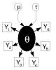

Initial values for chain 1:
list(
alpha0 = 0, alpha1 = 0, alpha2 = 0, alpha12 = 0, tau = 1,
b = c(0, 0, 0, 0, 0, 0, 0, 0, 0, 0, 0, 0, 0, 0, 0, 0, 0, 0, 0, 0, 0))
Initial values for chain 2:
list(
alpha0 = 10, alpha1 = 10, alpha2 = 10, alpha12 = 10, tau = 0.1,
b = c(0.1, -0.2, 0.25, 0.11, -0.21, 0.3, -0.25, 0.15, -0.31, -0.1,
0.1, 0.12, 0.2, -0.2, 0.4, -0.24, 0.14, 0.3, -0.2, 0.1, 0.05))